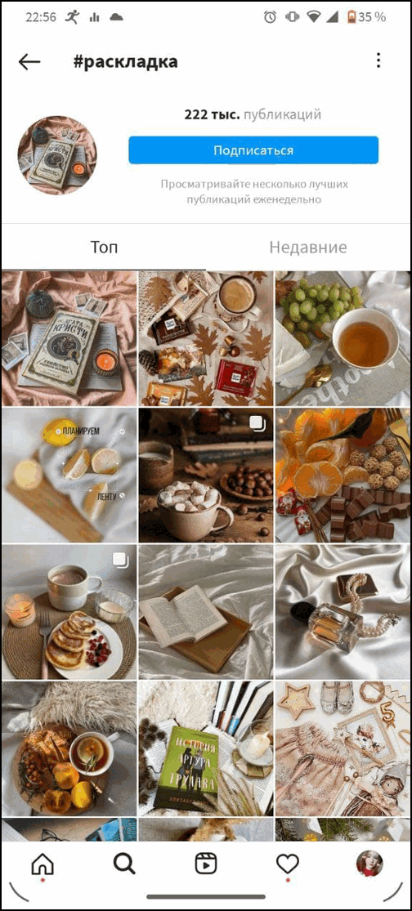
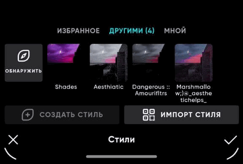
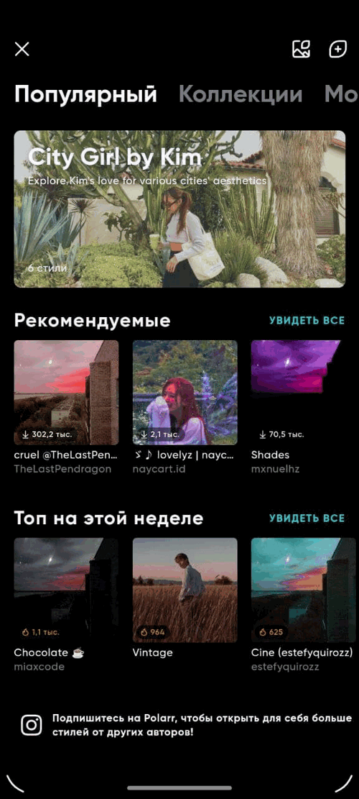
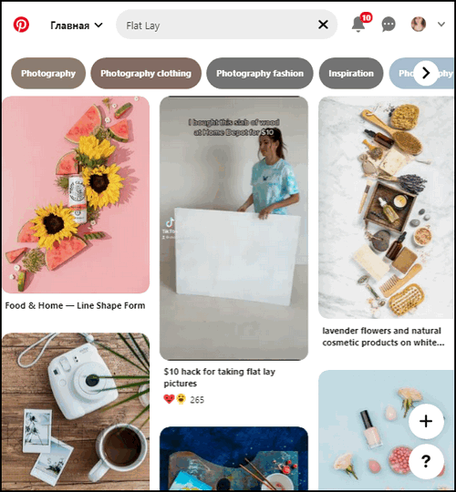

Как сделать раскладки в Инстаграме и красиво обработать их

Раскладка в Инстаграме* – это способ создания изображений, который включает правильно размещенные предметы примерно одинакового оттенка, формы или тематики. Такие картинки обычно используют между основными фотографиями, для рекламы продукции или интернет-магазинов.
Что такое раскладка в Инстаграме*
Flat Lay или раскладка в Инстаграме* – это одно из направлений фотографии, где нужно выбирать позицию съемки «сверху». Таким образом видно все предметы, которые автор хотел запечатлеть. Но при создании такого снимка нужно руководствоваться основными правилами:
- рассказать историю. Такой снимок должен создать сюжет. Например: чашка кофе и рядом с ней сладости, которые подойдут для легкого перекуса;
- создание фона. Не менее важен фон на котором будут размещены предметы или окружающая обстановка;
- правильно подобранный свет. Раскладки обычно не создают в затемненных помещениях, а используют мягкий дневной.
После создания снимка, пользователю пригодятся приложения, где можно добавить фильтры и настроить цвет, контраст. Снимают раскладки на мобильные устройства, применив эффект «размытие» заднего плана или с помощью зеркальных камер, где есть автоматическая коррекция.
В блоге размещают по одной из схем: шахматка, линии, по рядам и прочие. Обычно, добавляют между личными фотографиями автора страницы.
Типы аккаунтов где нужны
Раскладки в аккаунте Инстаграма* могут не пригодиться, если автор создает контент направленный на текстовое содержание. В остальных – стоит попробовать, чтобы сделать публикации интереснее для посетителей блога. Где актуально:
- личные блоги. О жизни, советы или лайфхаки. Подойдет для создания ежедневных картинок, где автор показывает свои часто любимые вещи;
- авторы travel-блогов. Блюда из разных стран, национальные украшения;
- владельцы интернет-магазинов. Текущая продукция, которая есть в доступности.

Flat Lay пригодится даже при создании блога кулинара, ведения страницы о психологии или технике. Важно подбирать предметы, которые сочетаются с тематикой блога. Например, в блоге изготовителя тортов можно использовать на фото продукты и инструменты, выбрав на фоне любой постельный оттенок.Настройка света и оттенков
Все виды раскладок в Инстаграме* требуют от автора одного – правильных настроек в освещении.
- пересвет. Даже если объемы темные, лучше выбирать другой источник света;
- большой глубины в тенях. Так предметы становятся объемными, но теряется основной посыл автора;
- контраста между оттенками. Если основным предметом выбрано красное яблоко, значит другие должны быть светло-розовыми или нейтральных цветов;
- хаотичное расположение. Все мешать в кучу тоже не рекомендуется.
- «золотой час». Правило не только для селфи, но и создания других фотографий. Это время в середине дня, когда свет попадает в окна и не нужно дополнительное освещение;
- минимум искусственного, а в особенности синего цвета;
- редактирование должно быть незаметным для зрителя.
Для изменения цвета можно использовать встроенные редакторы на iOS и Android. Или воспользоваться сторонними утилитами, с заранее подготовленными фильтрами.
Мобильные приложения для раскладок в Инстаграме*
Чтобы сделать раскладку фото в Инстаграме*, автору пригодятся:
- VSCO. Каталог постоянно обновляемых фильтров, возможность создать персональную заготовку и применять на всех снимках, чтобы вести блог в одном стиле;
- Polarr. Пользовательские прессеты, среди которых есть специальные «Инстаграмные*»;
- Snapseed. Регулировать размер изображения, цвет и использовать сетку, чтобы создать качественный снимок.
При создании фотографии рекомендуется либо на смартфоне включить сетку, либо через приложения. Такой способ поможет отцентровать предмет, разместив его прямо по середине холста.
Как воспользоваться Polarr, чтобы отредактировать фото:
- Скачать и установить приложение – открыть.
- Выбрать пункт: «Разрешить доступ к Галерее» - выбрать нужное фото.
- Фильтры – Найти новые.

- Раздел: «Популярное» - выбрать прессеты от блогеров.
- Применить на свой снимок, указав процент прозрачности.

- Сохранить отредактированный вариант на телефон.
Помимо этого, во вкладке «Инструменты», можно отрегулировать освещение, контраст и резкость. Это необходимо, если автор не смог сделать фото в нужном свете или необходимо добавить эффектов, чтобы улучшить.
Сервисы для вдохновения
Создавая раскладки в Инстаграм*, автору пригодятся примеры. В этом случае подойдут не только чужие блоги, но и сервисы, где можно посмотреть работы. Популярные площадки:
- Pinterest. Сервис, где собраны миллионы картинок, включая примеры блогов в Инстаграме*;
- We Heart It. Аналог Пинтереста, где также есть перечень изображений.
С помощью Пинтерест можно посмотреть, какие тренды во Flat Lay сейчас популярны:
- Зайти в сервис – авторизоваться с помощью аккаунта Google или Facebook*.
- Вписать в поиске: «Раскладки» или «Flat Lay».

- Посмотреть примеры от других авторов.
Эти примеры можно взять за основу и создать свои изображения. Там же автор найдет, как правильно размещать такие картинки в блоге, какие оттенки сейчас в тренде.
Правила размещения фотографий
Как и остальные фото в Инстаграме*, раскладки добавляют в определенные места на странице. Популярные разделы, куда стоит добавить:
- Истории или Актуальное. Загружать в разделы, как ежедневное приветствие или просто пост для общения с аудиторией;
- выбрать схему размещения снимков, чтобы правильно добавлять между личными фото.
Если это интернет-магазин, то чередовать Flat Lay можно с баннерными картинками, содержащими только текст. Или рекламными постами, если есть человек как главный персонаж.
Владельцы личных блогов могут загружать Flat Lay по диагонали или шахматным порядком. Но при этом, на снимке должен быть один оттенок, который использован и на остальных фото. Если автор ведет страницу в пастельно-оранжевых тонах, то на картинках с предметами должны присутствовать такие же светлые оттенки: молочный, охра, бронзовый и медный.